Trading assistant for Even G2
Trading assistant for Even G2Your positions, watched.
Trading rules you build on your phone, answered on your glasses. Set and forget: one rule covers every Bybit position you open, today’s and tomorrow’s, and puts the exact trade on the lens for your tap.
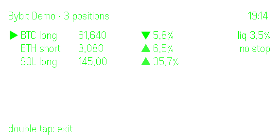
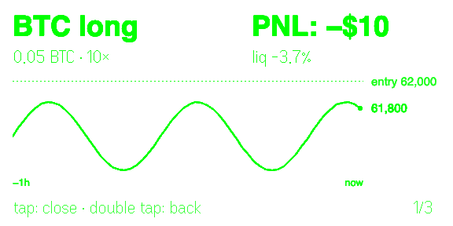

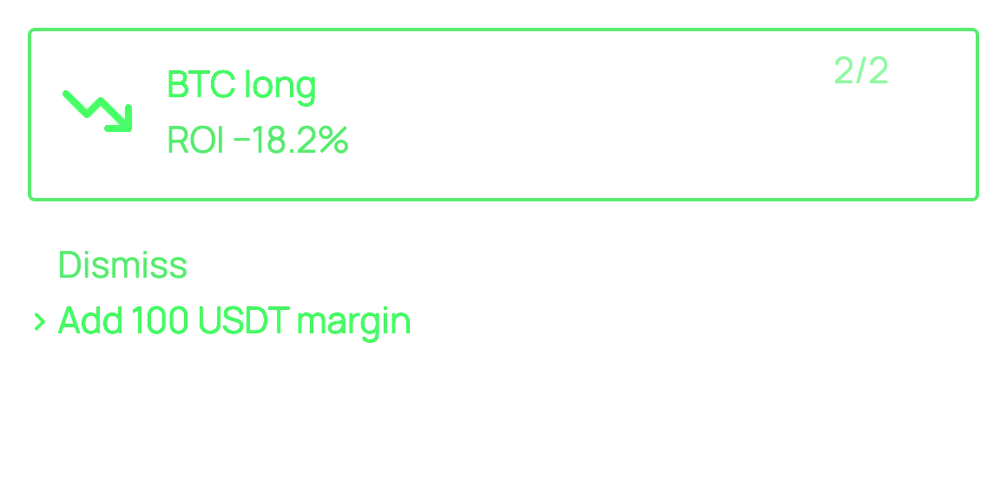
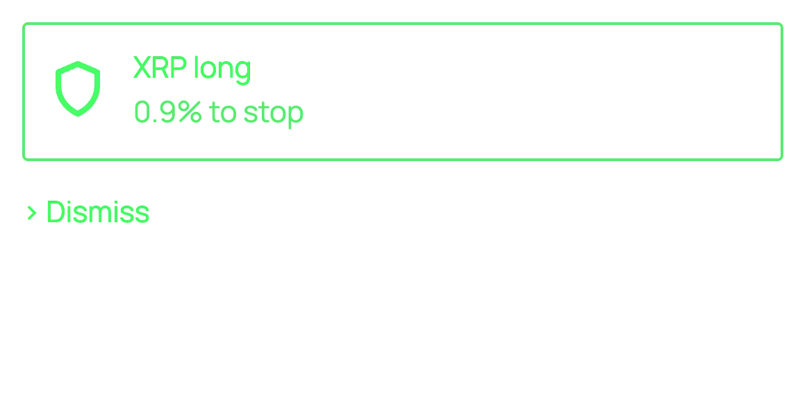
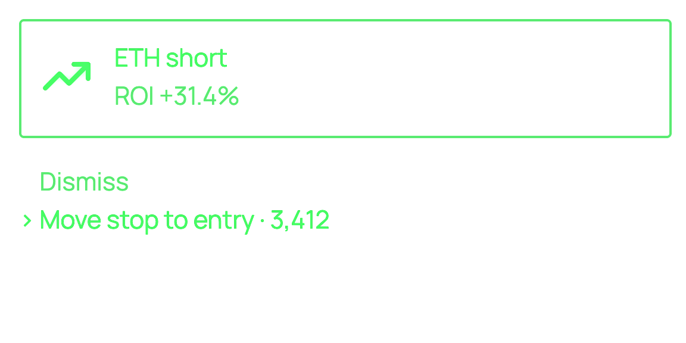
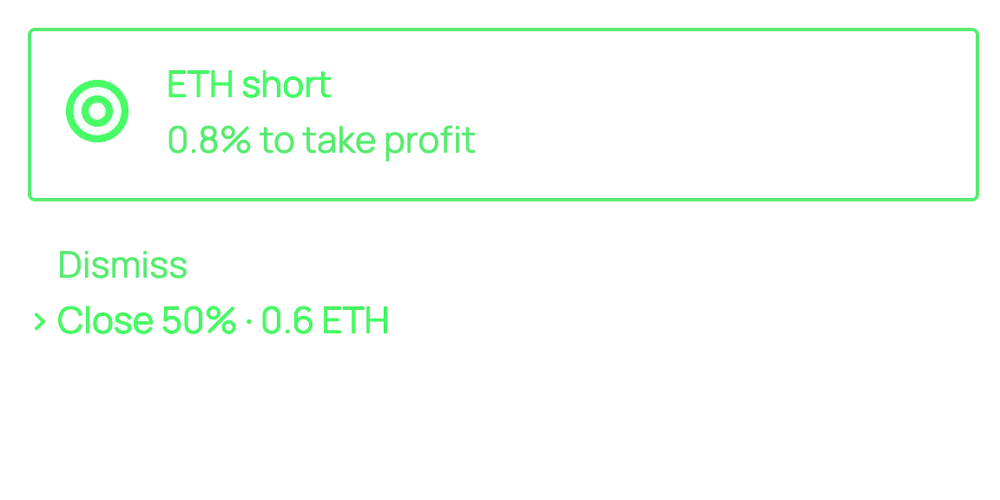
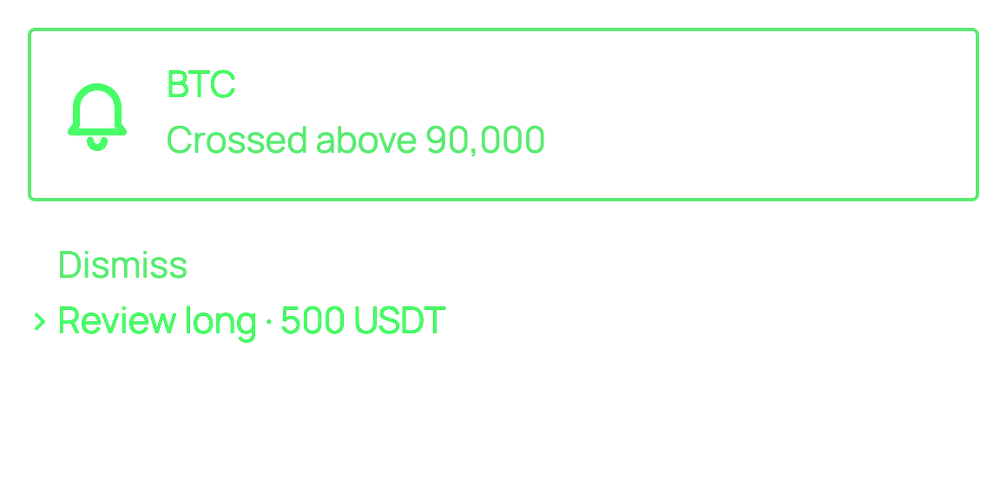
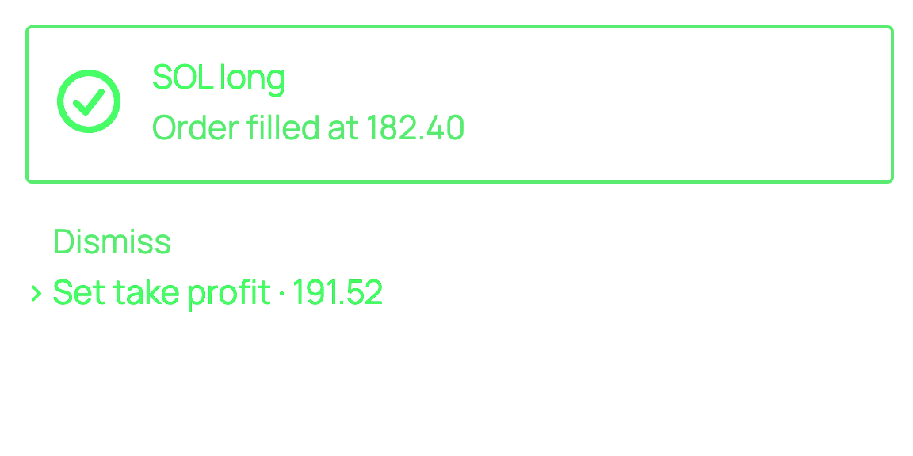
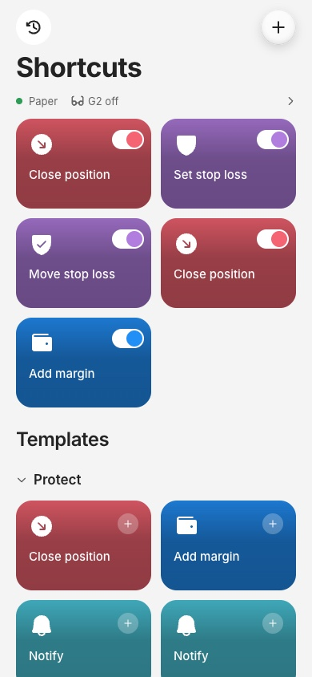
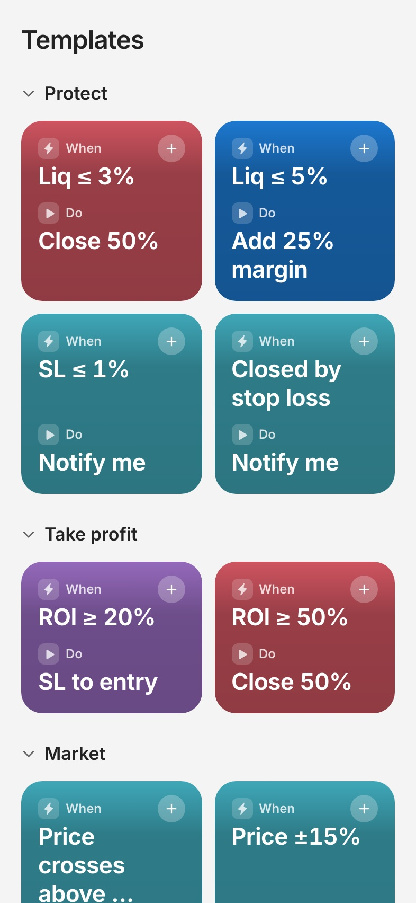
Every rule you trade by, one switch away.
Get an alert when volume spikes or funding is high. For actions like adding a stop or closing half a position, your glasses show the trade for you to confirm. Tap any tile on your phone to edit it.
Every event on your positions, on one lens.
Every open position. Right on the lens.
Main shows open positions, mark price, ROI and a warning near liquidation. Tap a position for its leverage, PnL, stop and liquidation distances, and the past hour of prices.
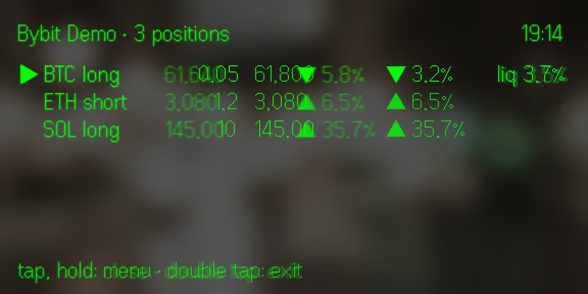
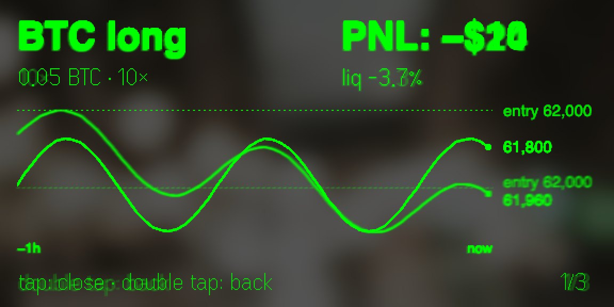
Your liquidation gets close. You see it first.
Leveraged positions close to liquidation, while there is still time to add margin or close half.


Stops and take profits.
Close to the stop, closed by stop, take profit or liquidation: every step of your exit plan.


Your order fills. Your glasses say so.
Limit orders, take-profit and stop-loss on Bybit perps, partial fills and orders open too long included.


Holding it got expensive. Now you know.
See when price crosses your level, moves by your chosen percentage, volume spikes or a funding payment is coming up.
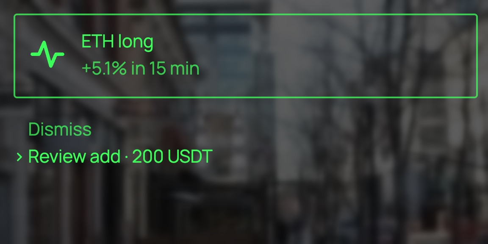

Your trade works. Secure profits.
ROI above your line: move the stop to entry or take half off the table before the move gives it back.

Protect your positions. Review each stop.
Tap then hold to open the menu. Protect all proposes a stop for eligible positions. Lock profits proposes moving a profitable position’s stop to entry. Review each proposal on the lens.
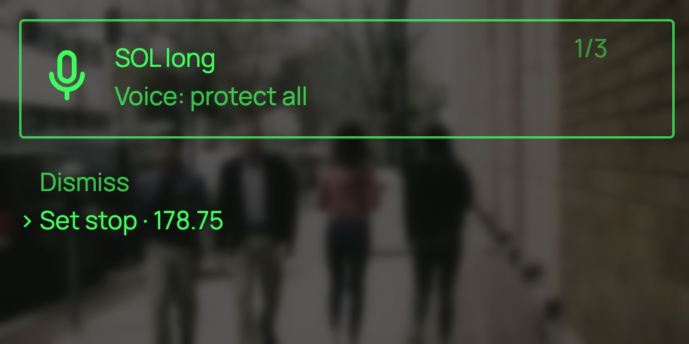

Build a shortcut. Try it here.
This is the real phone app, running in your browser on a demo account. Add a template or build your own. When a shortcut fires, answer it on the glasses below.
Tap a shortcut to edit it
Start with a template
One feed. On your glasses and phone.
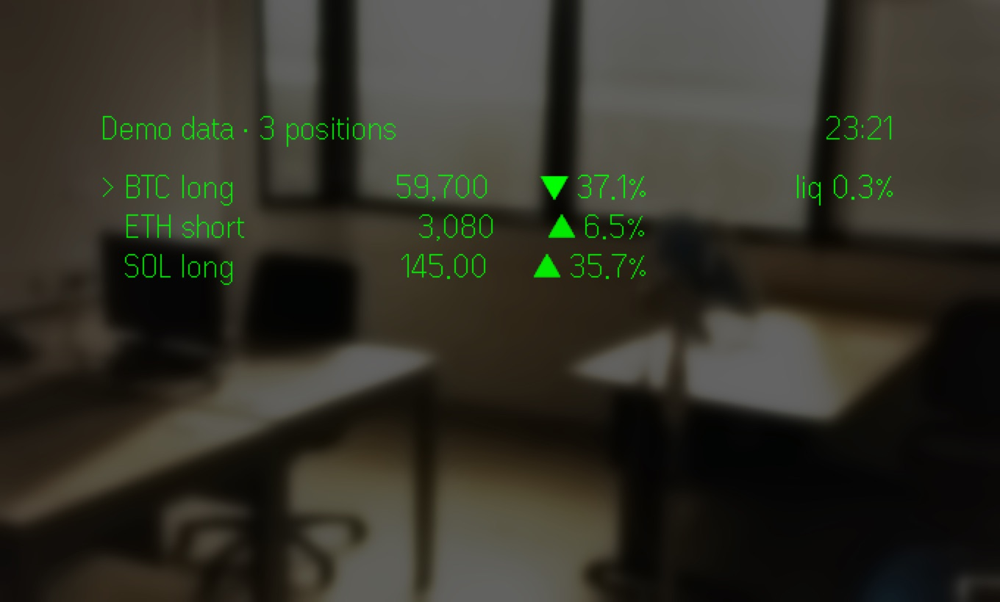
Set up on G2
- Pair your G2 with the Even Realities app and accept your Trade Shortcuts beta invitation.
- In the Even Realities app, open Me → Beta tester and install Trade Shortcuts.
- In Trade Shortcuts, open Settings → Connection and connect to the server provided for your beta.
- Choose Send test to G2 in Settings, then tap OK on the TEST card on your glasses.
Questions, answered.
How does Trade Shortcuts handle my keys and my money?
Your Bybit keys stay on your own Trade Shortcuts server, never on the phone or the glasses. Every trade is a proposal you confirm on the lens; a second tap or a resend returns the same execution. No withdrawals, no transfers.
How do the alerts work?
Build a shortcut on the phone: apply to one scope, when one or more conditions, do one action. The server checks Bybit every 2 seconds. When a shortcut fires, the lens shows the position, the strongest reason and one exact command, with Dismiss first.
Can a shortcut trade without me?
Every trade requires your confirmation on G2. Tap the action, or say yes on an eligible alert when voice answers are enabled. A five-second countdown lets you cancel a spoken yes. Terms never change silently: if the size or price moved, a new proposal replaces the old one and the old tap does nothing.
Which exchanges does Trade Shortcuts support?
Bybit demo and testnet. The server refuses any other host at startup. A built-in demo exchange runs without any keys.
What types of alerts can I receive?
Liquidation distance, profit and loss, stop and take-profit distance, closed by stop, take profit or liquidation, price levels and price changes, volume spikes, funding, and orders filled, partly filled or open too long.
What do I need?
Even Realities G2 glasses, the Even app on your phone, and a Trade Shortcuts server you run yourself. Voice needs an OpenAI key on that server.
How do I receive alerts?
The server keeps evaluating your rules. Alerts appear while Trade Shortcuts is open on G2, or in the open phone page, according to your notification settings.
Switch on your first shortcut. It takes a minute.
Pick a template, tap Add, then switch it on. Confirm each proposed trade on your glasses.